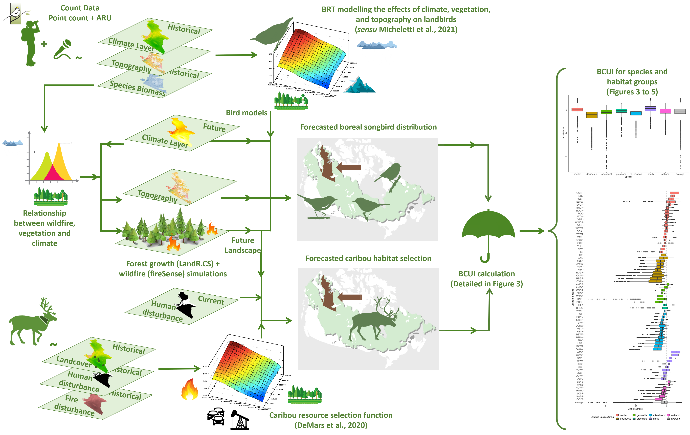

Will this umbrella leak? A caribou umbrella index for boreal bird conservation
2023-04-03
1 Appendix II
This appendix presents (1) all individual species results, as well as (2) specific scenarios, provides direct links to the (3) output tables used for generating the results presented in the manuscript (Micheletti et al., 2023) and points to the (4) repository and scripts used for this specific analysis.
The content can be found in the online manual available on https://umbrella.predictiveecology.org.
1.1 Abstract
Conservation approaches that efficiently protect multiple values, such as the umbrella species concept, have been widely promoted with expected dramatic ecosystem changes. Due to its social and cultural importance, and recent declining trends, boreal populations of woodland caribou have been suggested as potential umbrella species for other declining taxa, such as boreal landbirds. We propose a generic pixel-based umbrella index that focuses on fine-grained habitat overlaps. In light of ongoing conservation efforts worldwide implementing area-based targets (e.g., 30% by 2030), we used a random neutral model as baseline, as opposed to a no-conservation scenario, which has been used elsewhere. We found that the conservation efficiency of caribou as an umbrella for 71 co-occurring landbirds—three of which are priority species—in the Northwest Territories, Canada, is generally lower than our random model, as 53% of the species presented negative umbrella index medians with the interquartile range not overlapping zero. We conclude that in cases where area-based targets drive decision-making and the issue at stake involves identifying which areas to conserve—not whether to conserve—woodland caribou may be a leaky umbrella for most co-occurring landbird species and these might need complementary conservation actions to be brought in from the rain.
